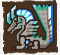
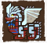
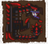
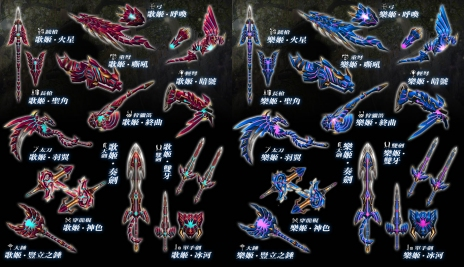
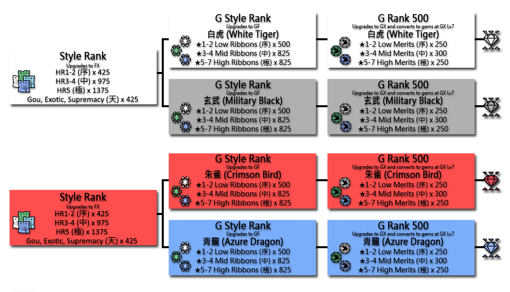
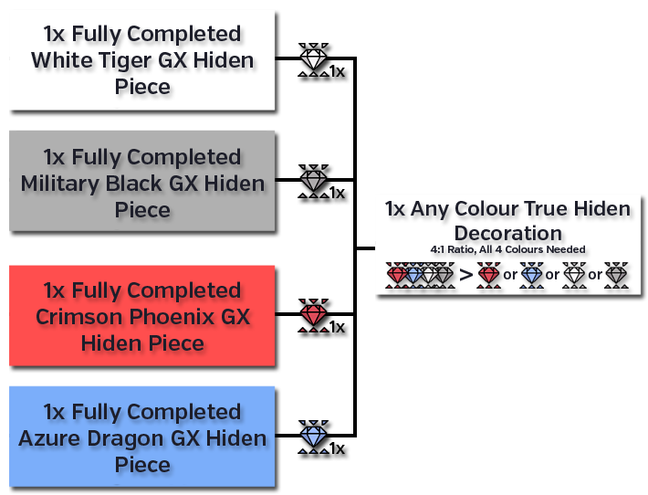

If you're just starting G Rank, read the starting G Rank section first!
If you're just starting G Rank, read the starting G Rank section first!

 If you're just starting G Rank, read the starting G Rank section first!
If you're just starting G Rank, read the starting G Rank section first!
This reiterates upon things in the Starting G Rank section to make sure you are not ignoring things you shouldn't be.
Don't use Level 1 weapons, if you're using a weapon that doesn't have an easily made weapon (see starter weapons below) upgrade your weapons as soon as you can as high as you can. This will provide a more immediate boost in your success in quests than changing anything else.
This only refers to literal G Rank Lv1 weapons, many weapons completely lack levels but are solid and comparable to higher levels. G Supremacy weapons are around Lv11 equivalents, Burst around Lv30, Origin around 50 with G Exotics two upgrades being around Lv45 and 50 respectively. Event weapons without levels vary wildly from being Lv1 to being directly comparable to Lv50s.
Pretty much all full sets are unusable, G rank is built around having up to 12 active and relevant skills at early stages and up to 16 in late game. The newer a monster is the more likely they are to be tweaked towards this level of skill use. Make a basic intro set and upgrade a weapon to being not terrible and then start on a proper mixed set like those in the Armours, Decos and Sets section of the site as soon as possible.
The chances of a good set not using a cuff is incredibly small. You will want to get a Pugi, an Outfit, the Departure Facility and the G Rank Cuff license (30P, 30P, 20P, 60P) up as soon as possible. You get 60P outright from going through the Hunter Guide Tasks before G Rank though you will need to wait until midnight for Pugi farm progression if you haven't gone through it before G.
I would recommend buying a Premium Outfit (50 points on store) over using a normal one, Premium Cuffs are often set enabling and you can rarely get materials for them for free as part of an event or promotion, which would be unusable without the Premium Outfit.
For the G Rank Pugi Cuff license you can simply spam the Talk option on your Pugi Farm Manager. You get over the 60 Points from simply having reached G Rank as a reward which can be triggered by using the talk option repeatedly.
If you've somehow wasted these points you will naturally gain these over 40 days by simply always grabbing points. You can also buy the G Guide item pack, this is a very expensive pack (300 points) for what you get in it so it is recommended only if you really don't mind wasting a full month's sub of money to immediately have points.
Sigils can be inserted in normal G Rank weapons instead of decorations. These can have a number of effects including flat additions to True Raw, True Elemental and Affinity and buffs to weapon motions.
You get a lot of tickets for simply doing Hunter Guide that can make mostly random sigils, these are not likely to be very good but can certainly be usable.
To make a couple of easy ones quickly you can simply hunt G Rank Hypnocs afte ryou get a basic set going. The A Sigil Recipe on Hypnoc can potentially roll up to +30 attack. Considering you can slot up to three sigils in a weapon this quickly adds up even if you only get low rolls on sigils.
Having something like 40 attack across multiple sigils is still close to or above a 10% increase to your weapons' power.
G Supremacy, Burst and Origin weapons do not have Sigil Slots. They instead have standard deco slots and grant an Armour Skill by simply using them. For example Varusaburosu weapons have Vampirism on them which allows you to leech health back as you attack. Despite how strong these sound, using good sigils in good weapons is incredibly likely to outstrip them in practice.
Get your partner in G Rank equipment as soon as possible. G Rank gear has fixed values for partners, simply choose any full set and the best sharpness you can find on a weapon and give it to your partner. You should also participate in the Diva Defense event to get large amounts of GCP start working towards skills on your partner. This is a much better use of GCP than being lazy and buying materials.
Do not mix up Partners with Felyne Partners or similar from mainline. Frontier's Partners are incredibly legit, they have access to all of the standard skills used at endgame and have elemental values superior to that available to normal humans. Partners can very easily outstrip many G Rank players if invested in.
Most G Rank Weapons and Armour will need various tiered Jewels, these come from breaking the parts of monsters that are ranked within the same star rating as they are. A lot of equipment will need multiple tiers in order to reach Lv50 or GX Lv7 respectively and will require the Jewel from the same rank as the monster to be initially crafted (e.g. Anorupatisu is ★6 and its armour needs both ★6 Jewels (絕玉) and ★5 Jewels (至玉) to be fully upgraded).
| G Rank Jewels | |
| 優玉 | ★1 Monsters Broken parts |
| 偉玉 | ★2 Monsters Broken parts |
| 華玉 | ★3 Monsters Broken parts |
| 壯玉 | ★4 Monsters Broken parts |
| 至玉 | ★5 Monsters Broken parts |
| 仙玉 | ★6 Monsters Broken parts |
| 絕玉 | ★7 Monsters Broken parts |
| All monsters except Conquest Monsters give these Jewels when you break their various parts. | |
There are often quests posted in the Scheduled Quests section that give a lot more Jewels than simply breaking does (which is a roll per tail carve or part break) which are definitely worth doing when they are up. This is especially true of ★7 Jewels as unlike lower tier jewels, which can be bought with GCP, N Points or Festival Points, you cannot purchase these in any way and will always have to grind a monster to get more.
Normal Quests are a lot like standard hunting quests however, rather than being organised by HR they are sorted by a star rating. The star rating ranges from ★1 to ★7.
The star rating of a quest determines how much defense is subtracted from you. This is a flat reduction based on the star rating, with it going down by 150 per star rating starting with ★2 for a maximum reduction of 900 at ★7.
There is an option to lower the star rating for a quest to make it easier but the trade off is that this reduces rewards and carves. Pressing  /
/ /F/C while confirming quest selection will adjust the star rating:
/F/C while confirming quest selection will adjust the star rating:

If you set a quest to be GHC the star rating will dictate what type of Weapon Ribbon you get for that hunt. Likewise if you are GR500 or higher and do not set it to GHC it will dictate what type of Merit you get. See the Style Rank section (Hiden Armour) for more information on these items.
The Scheduled Quests section contains all quests that are on some kind of altering schedule or are otherwise very notable and deserving of their own section.
Active Events are those related to Events being ran on the server.
Burst and Origin Quests are ★7 versions of certain Gou monsters, these provide materials for upgrading Gou armour to GF (Burst) and GX (Origin) levels.
G Exotic Quests are ★8 versions of Mainline monsters. These require GR500 to be fought at all and give items to both make G Rank Exotic weapon upgrades and to upgrade standard G Rank Weapons into G Finesse if hunted at GR800. These quests have the highest possible defense reduction in the game currently and the monsters are quite capable of one shotting through a Halk Shield.
Frontier Quests are quests against Frontier exclusive monsters, Monsters in different zones from the norm or simply with something else small that's special about them. Quests for specific G Break Jewels are usually posted here.
Daily Quests work identically to those at lower ranks, you can only take one daily regardless of rank so doing a non-G one stops you doing a G Rank one and vice versa.
After completing any standard G Rank quest you may trigger an Urgent Quest, these are always against Mi Ru, a flying wyvern that has the unique ability to shape shift. Mi Ru is completely optional and frankly lacking in purpose currently, fight him for the experience more than anything else.
Extreme Conquests are one of the four cycling events, Conquests are not optional if you want to properly play at G Rank.
Heavenly Conquests are extremely hard quests that are completely optional, these require that you have upgraded a G Rank weapon to Level 50 to be taken and consume a special type of ticket.
See the Conquests section below for more information on these.
These options are identical to those at the low rank NPC. The Superior Quests available at G Rank are simply for GRP to rank up or materials towards making a full single piece of armour at GX level.
The star rating of a quest determines how much defense is subtracted from you. This is a flat reduction based on the star rating, with it going down by 150 per star rating starting with ★2 for a maximum reduction of 900 at ★7.
There is an option to lower the star rating for a quest to make it easier but the trade off is that this reduces rewards and carves. Pressing //F/C while confirming quest selection will adjust the star rating:
Burst and Origin monsters are natural evolutions of the Gou monsters. These are required to upgrade Gou armours and weapons beyond G Supremacy levels.
Origin Monsters always have a specific 5% which is required for Origin upgrades, this is either an Origin Gem (始淵的黎玉) from Gureadomosu or Toa Tesukatora or an Origin Blood (始淵的黎血) from Yama Kurai or Voljang.
Burst are not much harder than ★7 Monsters but Origin monsters hit quite hard and have large health pools.
Exotic Monsters are the first mainline imports to MHF since Tigrex and Akantor were added in 2007. Unlike a standard G Rank monster, the G Rank variants of Exotics require you to be at GR500 in order to take their quests. These quests are rated as fixed ★8 meaning they have a defense reduction of 1050 in place.
Exotic Quests are unlocked at GR500 and are some of the hardest standard fights currently available. Each Exotic monster has a set of associated G Finesse weapons which can be found on the G Doc.


Exotic Monsters equipment also innately grant a skill outright for any piece being equipped. All weapons this is globally Speed Eating but Armour Pieces vary and are detailed below. Nargacuga armour pieces are especially desirable for the Evasion+2.
| Exotic Monster Skills | |
| All Weapons | Speed Eating |
| Zinogre | Thunder Attack (Large) |
| Deviljho | Starving Wolf +2 |
| Brachydios | Bomber |
| Barioth | Ice Attack (Large) |
| Uragaan (Blademaster) | Guard +2 |
| Uragaan (Gunner) | Ammo Combiner |
| Nargacuga | Evasion +2 |
| Stygian Zinogre | Dragon Attack (Large) |
| Gore Magala (Z1) | Focus +2 |
| Shagaru Magala (Z1) | Status Immunity (Myriad) |
Urgent Quests will randomly cycle in after you complete any quest with a proper Large Monster as its target. These are always against the monster Mi Ru.
Generally speaking Mi Ru equipment becomes incredibly niche from the release of Z1 onwards but the fight itself is good and should be attempted if you feel up to it for fun.
Most G Rank Weapons have been superseded by Zenith Weapons!
You will want to still push a weapon to Lv11 and then later Lv50 to unlock all content however!
Creating G Rank weapons is pretty much identical to the creation of lower rank ones, they are made from the G Rank crafting option on the Blacksmith and start out at Lv 1 and later upgrade to Lv 50.

Upgrading Rank weapons is where things differ from normal weapons. For levels 1 through 10 the upgrades are carried out at the main Blacksmith in a section specifically for upgrading G Rank weapons.
Bowguns still need to be levelled, they do not simply have 5 upgrade levels like a pre-G Rank one would. Attachments are fitted in the same place as they are on normal Bowguns.
Level 11 is where things are different, after getting a weapon to this point the next time you attempt to upgrade it you will see two different recipe possiblities.
The first recipe, which uses more items, has 100% success chance the second recipe that uses less has 60% success chance. Failing to craft an upgrade consumes all materials for the upgrade that was failed while returning the weapon in the state it was before the attempt.
(e.g. upgrading a Lv24 weapon to Lv25 and failing a gamble would use all the materials while returning the Lv24 weapon without it being upgraded).

Sigil Slots take the place of decoration slots in G Rank weapons. Weapons start out with 2 Sigil slots and gain a third at Level 30 (which requires a gem from Conquests).
Level 30 and beyond is the point at which you start needing Conquest related materials, see the conquest section below for more information.
Sigils replace gems in G Rank weaponry and are crafted at the Cat Smith who creates random Gou weapons. They can have multiple effects ranging from a simple buff to weapon's raw values, to granting new versions of weapon moves, to allowing you to wave at the Balloon an infinite number of times.

Crafting a Sigil requires you to choose from a list of various recipes, these all have a bias towards certain skills and are grouped into three different types:
Recipe A costing 300Gz uses commonly available monster materials.
Recipe B costing 500Gz uses rarer materials such as relatively low percentage carves or break only items.
Recipe ★ costing 700Gz uses the 1% carve off a G Rank monster.

After selecting the base recipe and base materials, you will be presented with a window where you can add additional 'filler' materials, if needed. These do not affect the outcome of the sigil and are purely materials used to pad the completion % in the top right to 100%.

After choosing filler materials you can craft the sigil and will be presented with the results and a relative rarity ranking in stars based on what you rolled.

Removing a Sigil from a weapon requires a Sigil Catalyst (紋章用觸媒), these can be gained by using the Gook Cooking Facilities on any G Rank materials, for 12NP in the N Point Store or by exchanging Tower Medals gained in the Sky Corridor at the Tower NPC.
A full index of all Sigil Recipes with their skills bias and associated roll percentages can be found in the Google Document
Specific details on what sigil skills actually do can be found in the G Rank Sigils section on the sidebar.
There are a large number of possible outcomes for every sigil recipe, the following are just some that have easy to get materials and chances at specific desirable skills that are good for players starting out.
| Generic Recipes |
|
| Hypnoc A |
Attack Power Sigils |
| Forokururu A Zerureusu A |
Elemental Power Sigils |
| Gypceros A Zerureusu A |
Status Attack Sigils |
| Red Khezu A | Affinity Sigils |
| Gunner Recipes |
|
| Rajang A Dyuragaua A |
Elder Dragon Attack Heat Cannon Add |
| Abiorugu A |
Rapid Fire Sigils Ultra Cluster Shot Sigils |
The creation and upgrading of G rank armours is identical to that of lower rank armours, creation is in its own section like the various Gou armours. Crafting G Armour is also the only way to get G Rank level G/GF/GX gems, see the gems section below for more information on that process.

G Pieces are what all G Rank armour starts as, these can be upgraded 7 times and then into a GF piece.
GF pieces are very similar to G pieces but will have more points in the various armour skills, they also have 7 Levels and may gain decoration slots with levels.
GX pieces are the final form of a G Rank armour, compared to GF these pieces will usually add points in one extra skill, just like G and GF pieces they may gain decoration slots with upgrade levels.
Upgrading to GX requires materials that are obtained by participation in the Conquests event, see the section below for more details on this.
The table below shows a Hyujikiki Helmet at G, GF and GX levels as an example of how this system works.
| Hyujikiki Helmets | ||
| G |
GF |
GX |
| Reflect +4 Strong Attack +4 Wind Pressure +4 Expert +4 |
Reflect +6 Strong Attack +6 Wind Pressure +5 Expert +5 |
Reflect +6 Strong Attack +6 Wind Pressure +5 Issen +5 Charge Attack Up + 5 |
| Note that the points granted increase at GF and that GX gains points in Charge Attack Up and that its Expert skill is changed into the G Rank Issen skill. | ||
Outside of the normal G Rank armour, you can also upgrade Gou Armour (剛種防具) to G Rank levels. Upon hitting GF these armours will become Burst Species Armour (烈種防具) which always applies the Muscle armour skill Boost effect to all eligible skills with only a single piece equipped.
This means that when used correctly a Burst piece can easily be the equivalent of 50+ skill points without even taking into consideration the Decoration slots and skill points they naturally add.
Origin Armours (始種防具) are the current final version of Gou armours, these all have points in currently relevant G Rank skills and provide the same Muscle Boost as Burst.
Maximum Activated Skills
Having three pieces of G Rank Armour equipped will increase your total number of armour skills to eleven (+1) and having five pieces will increase it to twelve (+2).
Normal G/GF/GX/GS/GP pieces all count towards this total, Gou armours upgraded to G or GF levels do not count towards it. This means you can only have 11 skills on any set making use of a Burst piece. It is worth noting that the Muscle skill boost granted by the single Burst can outweigh the disadvantage of losing a skill slot.
Maximum Activated Skills
Having at least three G Rank pieces equipped will grant an extra 30 True Attack while you are in a G Rank quest, this is a flat addition and is not multiplied by skills such as Adrenaline+2, but is quite significant if you are not using any multipliers.
Suitability Rating Buff
G Rank armour pieces all have a GR rating. This value is compared against a GR Suitability Rating (G級適正防具等級) that can be checked on your Guild Card, and applies a buff based on how much lower the GR rating is than the suitability is.

The actual buff applied is ((GR Suitability - Armour Piece GR ) * 20). For example if your suitability rating was GR5 and your equipped Helmet was GR3 you would gain ((5-3)*20) or 40 Defense on the Helmet.
Your GR suitability changes as you rank up in GR, GR7 armours will never receive a buff as they are always at or above the maximum suitability rating. Ratings at various ranks can be seen in the table below:
| G Rank | GR Suitability Rating |
| 1-29 | 1 |
| 30-49 | 2 |
| 50-99 | 3 |
| 100-199 | 4 |
| 200-299 | 5 |
| 300-399 | 6 |
| 400~ | 7 |
After hitting GR50 you can purchase a G Rank Pugi Cuff License from the Pugi Farm Manager, this costs 60P and is required in order to equip any G Pugi Cuffs. This of course also requires that you have a Pugi and a Departure Trampoline in order to take the Pugi on quests with you. G Rank Cuffs can be crafted at the blacksmith just as normal Cuffs could.
There are pretty much three different types of Cuffs at G Rank, ones that need Guild Treasure Hunter items, ones that need low% and normal G Rank carves and G Premium Cuffs.
Guild Treasure Hunter cuffs fall into two different categories, Base Cuffs and Combined Cuffs, as their names imply these are simply a base version and then various versions that these are used to create.
For example the base Issen Cuff is G Issen SA3 (G一閃鈕扣SA3) that gives +3 points in Issen, three of these can be combined with other items to create G Issen SA1-2 and SA4-8 Cuffs which provides the same +3 in Issen but coupled with other skills such as Absolute Defense, Recoil and Adaptation.The combination Cuffs can use items from Conquests and other items from the Guild Treasure Hunters, this means you might have to send the Guild's cats out a fair few times to multiple locations before you can craft them.
Premium G Cuffs are identical to non-G ones, they simply use paid for tickets to be crafted.
Cuffs that need G Rank materials are simply made using materials you can get from monsters, for example the G Absolute Defense SA1 Cuff (G絕對防禦鈕扣SA1) that gives +3 Absolute Defense and +3 Evasion is made using G Rank Diorex's 1%, 3% and 50% carves.
The vast majority of G Rank decorations can be directly crafted with only a handful of materials. Generally these are a couple of the lower percentage standard carves and a GHC carve. These are almost always available from sources such as the Road, Festival or GCP stores.
There are a handful of decorations that need you to craft and upgrade armour such as White Fatalis, Keoaruboru or Hiden decorations but these are a strict minority with even event decorations being crafted with only their base materials at this point.
G and GF decorations remain as only craftable from armour pieces but are unlikely to ever be used in a modern G Rank set.
The decoration crafting menu has a number of sections to make finding specific decorations less overwhelming:
The older way to get G rank gems is by refining Level 7 G Rank armours into them. Each piece will only yield a single gem and will be destroyed in the process. It is important to remember that you will only very rarely have to do this and that most can be produced in the menus above.
Level 7 G Armour pieces can be refined into a single G decoration.
Level 7 GF Armour pieces can be refined into a single GF decoration.
Level 7 GX Armour pieces refine into one of GX1 through GX5 depending on which piece is being converted.
Headpieces are GX1, Torso are GX2, Arms are GX3, Waists are GX4 and Legs are GX5. This matches the order of the actual blacksmith.
There are a handful of armours that have multiple G or GF gems, these use the same numbering structure so for example if you want a GF3 decoration you will need to convert Level 7 GF Arms of the appropriate armour.
The skills granted by the gems are roughly based around those given by the piece being converted, for example the following is the Inagami GX1 Decoration:

The Ingami GX Blademaster Helmet itself gives:
Stylish +4, Issen +3, Expert +7, Three Worlds +4 and Adaptation +3
For a specific example of all possible gems from a monster, the following are all Gems that you can make from G Rank Silver Rathalos Armour:
| G Rank Silver Rathalos Gems |
||
| Gem | Total Upgrades Piece Required |
Skills Granted |
| G | 7 levels Any Piece |
Edgemaster +2, Exploit Weakness +1, Expert +2 |
| GF | 14 levels Any Piece |
Edgemaster +2, Exploit Weakness +2, Expert +3 Vitality +2 |
| GX1 | 21 levels Helmet Only |
Edgemaster +2, Exploit Weakness +2, Expert +3 Vitality +2 |
| GX2 | 21 levels Torso Only |
Edgemaster +2, Exploit Weakness +2, Expert +3 Evade Distance +2 |
| GX3 | 21 levels Arms Only |
Edgemaster +2, Exploit Weakness +2, Expert +3 Rage +2 |
| GX4 | 21 levels Waist Only |
Edgemaster +2, Exploit Weakness +2, Expert +3 Movement Speed +2 |
| GX5 | 21 levels Legs Only |
Edgemaster +2, Exploit Weakness +2, Expert +3 Issen +2 |
Most armours will follow a very similar pattern with GF being a flat out upgrade over G and GX having the same points as GF but with a couple points in an extra skill.
Some gems vary from the norm such as G Black Fatalis' on which the last two skills change per GX gem and Gougarfs who have a GF1 gem for helmets and a GF2 gem for all other pieces at GF level.
There are a small number of G Rank level decorations that can be made immediately from very few materials relative to those required for a full standard decoration. To compensate for this, they also require you to fight the 7★ Elder Dragons or 8★ GR500 exotics. You can of course reduce their defense reduction to 1★ for the Elders but they are still rather challenging.
There are two Hypnocs under 1★ that give materials for two types of these decos, they are easier to get than Gurenzeburu decorations and are excellent for slotting into a Rasta when they stop being useful. This applies to all of these decos, their primary purpose seems to be bridging the gap to real sets using 15 GX decos and for making rastas without needing 15 to 18 true G Rank decos.
| G Class Decoration Examples | |
|
Ｇ級·護閃珠 Issen +2 Three Worlds Protection +2 Rage +2 |
黑綠原珠x15,優玉x1,永久冰塊x1 Hypnoc Quest Jewel x15, GR1 Break Jewel x1, Everlasting Ice Cubes x1 |
|
Ｇ級·怒剛珠 Strong Attack +2 Three Worlds Protection +2 Rage +2 |
黑綠原珠x15,優玉x1,永久冰塊x1 Hypnoc Quest Jewel x15, GR1 Break Jewel x1, Everlasting Ice Cubes x1 |
|
Ｇ級·護痛珠 Three Worlds Protection +2 Issen +2 Exploit Weakness +2 |
獄炎的厚龍鱗x5,炎王龍的重殼x5,優玉x1 Teostra Dragon Scale x5, Teostra Heavy Shell x5, GR1 Break Jewel x1 |
|
Ｇ級·閃血珠 Issen +2 Three Worlds Protection +2 Vigorous +2 |
獄狼龍的重殼x5,獄狼龍的剛爪x5,優玉x1 Stygian Zinogre Cortex x5, Stygian Zinogre Hardclaw x5, GR1 Break Jewel x1 |
As stated, these seem to just be intended to be low effort G Rank level decorations. Likely their best primary use is in a Rasta from the skill sets available on them.
Outside of Tonfas, LBG and HBG all Exotic equipment must be upgraded from their HR5 Exotic versions. The progression is faster than Gou and only has a single Tier at HR5 that upgrades directly to the standard G, GF and GX progression for a total of 4 upgrade tiers.
Exotic Weapons are unique in that they both provide the Quick Eating skill while equipped and in that they have hybrid slots which allow both G Rank Sigils and Decorations as well as having stats that end up comparable to any G Lv50 weapon.
Exotic Armour is mostly the same as standard G Rank armour and counts as such for the skill limit and raw attack increases however, it is unique in that any equipping any single piece will always grant a set skill based on the set that you have equipped a piece from.
For example equipping any piece of Zinogre Armour whether it be the Head, Chest or any other piece will give you Thunder Attack [Large], this does not take up a slot in terms of skill limit meaning it is possible to have up to 17 skills while utilising exotic armour (12 base skills, 5 different armour set pieces).

G Finesse Weapons have the effects of two skills built into them, Weapon Handling (武器技術, faster sheathing and unsheathing) and Movement Speed +1 (移動速度ＵＰ+1, Faster Movement). They are among the best weapons in their indivdual classes because of this. Outside of their innate skills they also give 20% extra CP on Caravan quests for breaking monster parts.
There are currently two ways to get G Finesse Weapons, through doing event quests and the caravan festival at GR1 or by fighting Exotic monsters at GR800.
The majority of G Finesse Weapons that can be created come from doing weekly events, these events will unlock weapons for crafting, most of which can be upgraded to either Master's Mark or HC level before they can then be upgraded into G Finesse by using a Caravan Box.
Caravan Boxes are obtained by participating in the Caravan Festival. Completing full ★ ranks will either reward you a certain type of Named Caravan Box (商隊月箱, 商隊花箱, etc.) or a Caravan Secret Box (商隊秘箱)
Secret Caravan Boxes are required to take a number of special quests which give back Named Boxes, the exact box returned can be checked on the third page of their quest information.
Named Caravan Boxes are specifically for upgrading a certain preset weapon to G Finesse level. The weapon upgraded varies based on the box and you will need to work out which upgrades the weapons you desire to upgrade as you would anything else.
An index of the various Caravan Boxes and the weapons they make can be found in the Fist.moe Google Document.
After you get an Event weapon to G Finesse level it will start uprading using Pallone's Wisdom (熱氣球的智慧) as its upgrade material. The first 10 upgrades will always cost 3 boxes and after this point you can use either 3 for 100% upgrade chance or 1 for 60%. With perfect RNG this means 70 items to finish an upgrade but because this is perfect success rate across 40 gambles using something closer to 100 is more realistic.
Pallone's Wisdom are exclusively obtained by hitting Points Goals during Caravan Festivals (See Festivals and Regular Events for more details). It is also worth noting that despite primarily using Pallone's Wisdom you will still need the standard conquest materials to upgrade beyond Lv30.
G8 added the ability to upgrade existing G Lv50 weapons to G Finesse level. Upgrading to G Finesse increases their total stats and adds the same abilities as a caravan G Finesse weapon (Weapon Handling, Movement Speed, CP Bonus). Stats that get upgraded vary but most things including Affinity, Sharpness, Coatings, Shot Types, Shot Capacity, Recoil, Elemental and Status values can be increased by these upgrades when compared to their base Lv50 forms.
These G Finesse upgrades use are created by using items that are exclusive to G Rank Exotic Monsters such as Zinogre and Deviljho after you have reached GR800. The monster that needs to be hunted varies by each weapon but all of them will require 50 of an Exotic Gem, Bone or Shell (遷悠玉, 遷悠骨, 遷悠殻) this means at minimum you will need to hunt 50x the Exotic Monster associated with the weapon at G Rank.
Because of the innate buffs of these weapons and the fact they eclipse their normal G Lv50 base they are amongst the very best weapons available in game. An index of the various G Rank weapons that have G Finesse upgrades can be found on the Fist.moe Google Document.
Unlike mainline the skills you use are actually incredibly important and you are ultimately expected to have a certain core set of skills in order to clear standard content within a decent time frame. A guide to selecting the proper skills per weapon type can be found on this dedicated guide page.. Good sets will generally have .
This is mostly not relevant to current meta and can likely be ignored outside of events that might need you to have the pieces (e.g. Volganos transmogs)
With G9 all non-G equipment was made to use Armour Spheres instead of any standard monster or gathering materials. This means a large number of equipment pieces that used annoying to get materials became much easier and now need far less intensive grind. There are no changes to Hiden sets but any pieces that are notable in their reduced grind are below:
| Piece | Item | Quest | GX Lv7 Skills | Note |
| Volganos Helmet 熔岩之龍提督 | Surging Black Shell 澎湃的黑殼 | 焦燃黑彈 Hunt 1 Volganos and break its head | Steady Hand +5 Combination Expert +5 Critical Shot +3 Gentle Shot +5 Bullet Saver +4 | Somewhat Less Grind (No normal materials, less dedicated quest materials) |
| Red Volganos Helmet 赤熔岩龍傳奇 | Boiling Red Shell 沸騰的紅殼 | 滾燙紅蓮 Hunt 1 Red Volganos and break its head | Sword God +7 Compensation +3 Combat Supremacy +4 Stylish +10 Issen +3 | Somewhat Less Grind (No normal materials, less dedicated quest materials) |
| Rath Subspecies Armours 雙炎龍 | Book of Heaven and Earth 雙火龍的秘傳 | 滾燙紅蓮 Capture an Ian and Los | Various | Largely Reduced Grind (30 books vs. 80 books) |
| Lost Cat Armours 雙炎龍 | Mystery Crown 某人的王冠 | From the Lost Cat between quests, see House and AI Companions section for details. | Various | Ridiclously Reduced Grind (25 Crowns per set vs 248 per piece) |
| Pugi Farm Adventure house Armours 褐紅 | Memory Fragments 回憶的碎片 | From the Pugi Adventure House, see House and AI Companions section for details. | Various | Ridiclously Reduced Grind (30 Total for all sets vs 225 per piece) |
Of these pieces the Volganos Headpiece is especially notable and has incredible good points for strong G rank sets.
This set is primarily for those with Determination. It is less and less useful going forward and is probably not vital at all. Z1 adding ZP and ZX armours especially lowers the appeal of this set.
The Shiusu Set is a set with excellent points for the core skills that are used endgame come G9. The set itself is first crafted by simply delivering gathered materials and is thus worth working on in advance.
The gathering itself is incredibly time consuming, you require 20 of each coin which each needs 50 of 3 item types to be delivered. It is a long term project and thus should be started early if you want to actually utilise any of the pieces.
A full list of all materials can be found on pastebin or in the form of an image.

| Blademaster | Skill Points Granted |
| Head | Sword God +5, Critical Conversion +4, Strong Attack +5, Combat Supremacy +4, Drawing Arts +4 |
| Chest | Sword God +5, Critical Conversion +4, Strong Attack +5, Stylish +5, Stylish Assault +5 |
| Arms | Sword God +5, Critical Conversion +4, Strong Attack +5, Status Assault +5, Drug Knowledge +5 |
| Waist | Sword God +5, Critical Conversion +4, Strong Attack +5, Assistance +6, Encourage +5 |
| Legs | Sword God +5, Critical Conversion +4, Strong Attack +5, Focus +6, Charge Attack Up +5 |
| Gunner | Skill Points Granted |
| Head | Bullet Saver +5, Critical Conversion +4, Strong Attack +5, Elemental Attack +6, Combination Expert +5 |
| Chest | Bullet Saver +5, Critical Conversion +4, Strong Attack +5, Evasion +5, Stylish Assault +5 |
| Arms | Bullet Saver +5, Critical Conversion +4, Strong Attack +5, Auto-Reload +5, Steady Hand +5 |
| Waist | Bullet Saver +5, Critical Conversion +4, Strong Attack +5, Assistance +6, Steady Hand +5 |
| Legs | Bullet Saver +5, Critical Conversion +4, Strong Attack +5, Combat Supremacy +4, Mounting +5 |
Conquests are tiered quests that you use to get materials to upgrade G Rank weapons and armours. They come at four levels (1, 200, 1000 and 9999) which increase reward pools and available items. All items required to actually upgrade armour and weapons come from Lv200 while to experience everything a monster has to offer you should do the Lv1000 at least once.
The Lv9999 conquests are some of the tankiest content in the game and you should expect to be one shot by everything and take a long while to complete the quests. These quests give fixed G1%s from the target monsters and grant a transmog for the monster's armour on the first clear (currently broken for older players, 13/04/2018)
There are four Ultimate Conquest monsters, Black Fatalis, Shantien, Disufiroa and Crimson Fatalis. All four of these monsters are always available at Levels .


| Icon | Name (CN) | Name (EN) | Use |
 |
極征貢獻證 | Extreme Conquest Proof | Upgrading G Weapons (Lv30/39/45), GX armour, G Pugi Cuffs. |
| 輝累石 | Radiant Armour Stone | GX Armour Upgrades | |
| 絢累石 | Kimono Armour Stone | GX Armour Upgrades | |
 |
碧武玉 | Green Valour Stone | Lv 31 / Lv 37 Weapon Upgrades |
| 蒼武玉 | Blue Valour Stone | Lv40 / Lv44 G Weapon Upgrades | |
 |
紅武玉 | Red Valour Stone | Lv46 / Lv49 G Weapon Upgrades |
| 黃武玉 | Yellow Valour Stone | Lv50 Weapon Upgrade | |
| 鎮定球 | Suppression Ball | When used in a Conquest it slightly debuffs the target monster |
Heavenly Conquests (Shiten) are conquests which are already set to Level 9999 and which reward exceptionally good Sigils for use in G Rank weapons. They cycle in alongside Ultimate Conquests, usually only one monster will be available but it may rarely be two.
Taking these quests requires that you have previously crafted at least one Lv50 G Rank weapon and disables the use of Halk Pots (including the Premium Course buff) and Legendary Rastas.
These quests have a time limit of 20 minutes and monsters have the maximum amount of defense they can possess. This means you will likely need a party of four players all actively using high level sets to be successful, or to be actively using Hiden skills and Adrenaline if you desire to solo the content.
Soloing these monsters is entirely possible but requires a solid set and the use of Adrenaline. Naturally this requires you know the monster well and will be a learning process. It is entirely possible to solo both monsters with every weapon in the game. Good times for the stronger weapons are notably under 5 minutes.
There are Heavenly Conquests for Disufiroa and Unknown, both of these are notably different from their normal Conquest and Supremacy versions respectively. Unknown has in the region of 140,000 Effective Health while Disufiroa has somewhere in the region of 230,000 Effective HP.

| Item | Description |
至天之鑰 Shiten Key |
Creates powerful general purpose Sigils and Sigils for Hammer, SnS, Gunlance, Bow and HBG. Obtained by defeating Disufiroa. 1x Fixed for quest clear, 1x fixed for no carts, 1% chance of 1x extra per reward slot. |
至天之閂 Shiten Latch |
Creates powerful general purpose Sigils and Sigils for GS, DS, LS, HH, Lance and LBG. Obtained by defeating Unknown (Black Rathian). 1x Fixed for quest clear, 1x fixed for no carts, 1% chance of 1x extra per reward slot. |
至天之鎖 Shiten Lock |
Creates powerful General Purpose Sigils with slightly higher stat ranges than other Shiten Sigils. 1x Fixed for defeating either monster in Under 10 Minutes. |
| You can use Lucky Charms to get extra Shiten Rewards. | |
Advanced Shiten quests are pretty much identical to the above with much more inflated health and attack values. They seem to have in the region of 300% of the HP that a standard Shiten monster does putting Unknown at around 420,000 Health and Disufiroa at almost 690,000 Health.
| Item | Description |
至天之黑鑰 Shiten Black Key |
Creates powerful Affinity and Attack sigils. Obtained by defeating Advanced Unknown. 2x Fixed for quest clear, 1x fixed for no carts, 1% chance of 2x extra per reward slot. |
至天之對鑰 Shiten Opposition Key |
Creates powerful Elemental and Attack sigils. Obtained by defeating Advanced Disufiroa. 2x Fixed for quest clear, 1x fixed for no carts, 1% chance of 2x extra per reward slot. |
| You can use Lucky Charms to get extra Shiten Rewards. | |
 Diva Quests & Song Buff
Diva Quests & Song BuffThe Diva can be found in a side area of the main town on the steps leading to the square. Her questline grants various materials to make Diva exclusive equipment which is extremely good.


English objectives and rewards for the various chapters can be found in the Google Document, you may have to talk to more people than the document lists.
As of the 10th Anniversary Update you no longer need to actually interact with the diva to unlock Tonfa. You will get them alongside Extreme Styles.
After finishing the Third Chapter of the Diva Quests in their entirety you unlock the ability to gift things to the Diva and the ability to have her perform a song.
Giving the Diva gifts increases her invisible Affection value, the higher this value the better the buffs provided by the Diva Song. Getting her to perform costs a Diva Song Gem provides buffs for around one and a half hours.
pecifically the Song provides these buffs:
• Extra Souls during the Hunter Festival (Up to +2)
• Extra GRP and GSRP (Up to 1.25x)
• Divine Protection
The strength of the buff starts out somewhat weak so it's incredibly desirable to max out the buffs provided by the Diva.
Maxing out the buff is relatively simple, the maximum value of Affection is 999 and the maximum buff is granted at 990. The easiest way to do this is to simply buy a lot of Fluffy Cakes at the GCP store. Buy 87 and gift her all of them, gifting her the first cake will give you 5x Warm Honey Tea from the Hunter Guide Challenge which should also be gifted in order to max her affection.
Full completion of each chapter provides 10 affection and thus the minimum amount of cakes is 87 (due to the three compulsory chapters and five free Warm Honey Teas) and goes down by 1 Cake per chapter completed for a minimum of 75 with all chapters cleared.
You do not need to regift items, you only ever need to give the 87 cakes once.
Activating the buff costs 1 Diva Song Gem in order to make the Diva perform, these can be purchased either for GCP or Tower Medals. Performances and by extension the buffs are free while on the VIP course.
The following are the items relevant to the Diva's Affection and Performances:
| Item |
Purpose |
Cost / Location |
 天籟的祈珠 天籟的祈珠Diva Song Gem |
Song Performances | 120 GCP / GCP Store 30 Medals / Tower Store |
 鬆軟的蛋糕 鬆軟的蛋糕Fluffy Cake |
Diva Affection +10 | 100 GCP / GCP Store |
 暖暖的蜂蜜茶 暖暖的蜂蜜茶Warm Honey Tea |
Diva Affection +20 | 20 Medals / Tower Store Hunter Guide Reward |
The diva has a number of weapons associated with her quest line, you will get the materials to make 4 of the first series and 2 of the second by completing all Diva Quests.
These weapons are globally very good and all upgrade to G Finesse levels at which point they can literally eclipse the 250 hour grind Raviente weapons.

Your first proper 11 or 12 skill set will be one of the biggest buffs you get in Frontier and will make a world of difference. The sets below are some sets to work towards or to use as templates for generating your own similar sets.
For Blademasters any combination of pieces that gets you desired skills is fine.
For Gunners you always want to have at least one Origin or Zenith Armour Piece in your set. This is a huge buff to DPS when you are properly spaced for all ranged weapons. Considering that if can't space yourself properly, you shouldn't be gunning, these pieces are very much compulsary.
These sets are all pretty old, they will still service you up to the level of content they were designed for but there is a good chance you can get better sets easier. Check the pastebin linked at the end for better, more modern sets.
Z1 Sets
Sets designed for the Z1 release with varying decoration set ups to cover any weapon except Hunting Horn.
Z1 HH Set
A set with all the core skills you'd expect on a proper set and Encourage+2 to get Evasion+2 and Horn Maestro to extend song duration.
Z1 Generic Bowgun Set
A solid set with all the skills you'd want to see on a proper Bowgun set.
Z1 Generic Generic Bow Set
A solid set with all the skills you'd want to see on a proper Bowgun set.
Bows always want the skill Auto-Reload which is completely terrible in every way on bowguns, do not use bow sets with bowguns.
Set Sharing Pastebin
A pastebin with any sets people want to share, contact Lucifrax in the Discord if you want to contribute or have questions about these sets.
I don't actually have any of these but Zenith pieces are hugely enabling for all weapon types. You can enhance activated skills, go beyond the typical 12 skill limit and go beyond 11 skills while using an Origin piece for gunning.
ZX pieces can be left at Level 1 without any real downsides - reducing the required grind a large amount compared to level 7 - but require you to both be at GR800 and have a set capable of killing GR800 monsters which are notably more tanky than any other standard monster in the game and fairly harsh in general.
When you are both GSR999 and GR899 you will start earning a new type of Hunting Points (功獵點數), these are exclusively used on a randomised point exchange option on the Guild Master NPC found within the options:
The Lottery Draw is an option that draws transmog creation items from a random pool in a batch of five. This has no deterministic mechanics to it and is purely an RNG draw and you are purely at the whim of luck. Possibile draws include all the standard White Hiden armours and armours such as Garuga. A few armours that have yet to be released for transmog (any with SP in the name) also have tickets available due to the nature of TW's update cycles which you will have to wait to redeem.
If you draw a duplicate you can use the Cheque Exchange option to turn them into a stack of 5x 50k Gzeny tickets. This is not terribly much but there is no other use for duplicate transmog items currently.
Simply subscribing after hitting GR500 will give you a set of five tickets that you can convert on the combiner NPC for a full Hiden. This removes one of the biggest grindy elements currently in game and makes getting a proper foundation for endgame zeniths much easier!
Be sure to read the Choosing Decorations part despite the grind removal! you do not want to end up with a bunch of brick decorations because you didn't read a few paragraphs!
Hiden Decorations are per weapon decorations that grant a single Weapon Type's associated Hiden Skill (e.g. Great Sword Tech). These decorations are refined from Hiden Armour in the same way you would get any other GX decoration.
Hiden Skills always grant at least 20% additional flat Attack as well as other additional weapon specific buffs. It is practically compulsary to have Hiden if you are intending to tackle the true endgame content such as Berserk Raviente or solo runs of GR800 Zeniths and it is fairly common to have multiple sets of decorations for dedicated players.
Regardless of this if you are a more casual player or simply always play the game in groups Hiden can be viewed as optional.
The armour for upgrading into Hiden Decorations can be found in its own section, at the point of creation you can make either White (which upgrades into either White or Black) or Red (which upgrades into either Red or Blue) pieces.
All pieces convert into the same final decorations, having a full Black set or 5 Black Helmets maxed would result in identical decorations. The only difference is the materials used for actually upgrading each piece, utilising this index of all the various items needed is recommended to avoid needing to farm more G1%s or GHC than you need to.
There are four different colours of Hiden Decorations for each weapon, White, Black, Red and Blue. These grant different additional skill points based on their colour and are naturally refined fromt heir associated armour type.
Utilise the free premium for Hiden grind!
It reduces the number of quests needed by 1278 or 62%.

Hiden Armours all require several thousand materials, the vast majority of these are Weapon Souls, Ribbons and Merits. These are obtained by fighting monsters either in or out of HC mode at proper ranks. A table of these and the totals needed can be found below.
| Souls (魂) (SR) | Ribbons (綬) (GSR) | Merits (勲) (GR500) | |||
| Quest Types | Total | Quest Types | Total | Quest Types | Total |
| Low (序) HR1-2 |
425 | Low (序) GSR1: ★1 - 2 |
500 | Low (序) GR1: ★1 - 2 |
250 |
| Mid (中) HR3-4 |
975 | Mid(中) GSR1: ★3 - 4 |
825 | Mid(中) GR1: ★3 - 4 |
300 |
| High (極) HR5 |
1375 | High (極) GSR1: ★5 - 7 |
825 | High (極) GR1: ★5 - 7 |
250 |
| Top (天) SR Gou, Exotic & Supremacy |
425 | - | - | - | - |
You can increase the number of Souls, Ribbons and Merits you get per quest by matching the type of Monsters currently posted on the Bounty Board just next to the Blacksmith's entrance.
Monsters with an active Bounty will give 3 Souls or Ribbons instead of simply 1 while they are targetted and give 8 if you are on premium.

There is no magical way to increase the number of items you get. You can payfor Hiden Stones which each give 1 piece worth of souls. They do not give the HC carves nor do they give any G Rank materials. These are a fixed 20 lottery coins and a full set will cost you around 70 USD. Considering you can get 21 days of premium and 28 days of premium for this same figure you should never be wasting money on these.
If you want the best returns on your investment it's worth holding off on committing to any single set without doing research and generating a set for after your grind. Each of the four coloured sets convert into different gem types:
White Tiger (白虎), Military Black (玄武), Crimson Bird (朱雀), Azure Dragon (青龍))
There are two different varieties of Hiden decoration, standard Hiden and True Hiden.
True Hiden gems are simply upgraded versions of the original Hiden Decorations that have G Rank Skill Points crafting one of these requires 1 of each of the 4 Colours of normal Hiden Decorations meaning that grinding out a full set is directly equivalent to making four full sets of hiden decorations.

Despite being notably better than standard Hiden decorations these should not be a priority, although they can be good if striving for absolute optimisation of a set, you should still have a full hiden set to grind them out with.
It is also of note that going forward Z1 adds the ability to get extra Skill Slots. This means having actually relevant skills on your Hiden decorations is much more valuable as a set of decorations can functionally be 2 fixed skills on any set. Likewise if you are using Determination it's definitely worth considering these as the Determination Decorations will take up an additional 5 slots, meaning you only actually have 5 slots to work with on a Hiden and Determination set.
The decorations you go for should be based upon what sets you intend to build, the tables below give my thoughts on the various hiden decorations.
For most weapons it is advisable to avoid getting Hiden Gems that give any skill outright. This is because many skills may cause more desirable skills to be pushed out in terms of priority or may overlap. Multiple skills can grant Affinity or Fencing+2 for example so you do not want to get enough points to trigger those alone. Some weapons such as Hammer, Greatsword, SnS or Bow are very likely to always want a single skill (Focus, Elemental Attack, Auto-Reload) and as such getting a variety or even True Hiden decorations at all becomes less imporant there.
Although Elemental Attack is quite desirable on SnS it is not a must have. This is unlike focus on a Greatsword. If you are making SnS decorations it is probably advisable to make 6 rather than 5 if you want to be able to min-max properly.
For anything that doesn't come with a de facto skill and if you are planning ahead it is probably most sensible to get at least 1 of each of the four colours. This sets you up to immediately create a True Hiden decoration when you need them and avoids most issues that can occur with fixed skills bricking sets. Likewise comitting less and getting 3 and 2 or similar combinations can also help greatly in avoiding unwanted skills.
If you are making True Hiden Decorations and you ever desire to get Determination it's worth avoiding Issen or Sniping on True Hiden decorations simply because they are included in the compound skill. Sniping is not a brick skill as the auto-reload part still applies but Issen is completely bricked by Determination and useless with it.
Aside from the table above you can find a list of all Hiden Gems and their skill points on the Google Document for reference.
Simply subscribing after hitting GR500 will give you a set of five tickets that you can convert on the combiner NPC for a full Hiden. This removes one of the biggest grindy elements currently in game and makes getting a proper foundation for endgame zeniths much easier!
Red Chests, Black Waists and White Arms all need Conquest Monster G1%s if you already have the materials this is not an issue but these are time slotted and can be down for up to weeks at a time, which makes them much worse to grind out than all the other G1%s.
Specifically Red Chests need a Disufiroa G1%, Black Waists needs a Black Fatalis G1% and White Arms needs a Shantien G1%.
Hiden grind is a very drawn out process, absolute best case it'll take you around 20 hours per set. With this in mind it is very important that you get a few things to make the grind go smoother.
Having a proper 12 skill set without Hiden will massively increase the rate at which you kill monsters. A bad set can easily double the time you take per quest, which can result in wasting times in the tens of hours.
An impatience charm can reduce the waiting time after a quest by up to 40 seconds, if you take the grind baseline as 775 quests this is an instant saving of over 8 hours. This is potentially enough savings to avoid using an extra day of premium on the grind.
See Items & Materials > Special Charms for information on how to get these if you do not already know.
Grinding out the Souls, Ribbons and Merits is only one part of the Hiden Grind, G1%s, GHCs and HCs make up a big part of it as well. Working out what carves you have and which you need in advance can accelerate your progress towards getting your set done quickly, especially if you utilise the Festival Point store to buy GHCs or HCs in preparation for a Hiden Set.
The G upgrades on a full Hiden need around 25x G1%s, 45x GHCs and 25x HCs. Working on HCs and 1%s before you start this grind can go a long way to avoiding downtime.
You can either use the basic hiden material listor the slightly nicer google sheets, making a copy of the latter is recommended. Only the latter can be saved.
Unlike most content in the game Hiden Grind is one of the few places I would actively recommend getting premium. Without premium you will need to complete 1,609 quests for a single Hiden Set. With premium this is only 775.
To put it in perspective, you need to do 834 quests less, this is enough to complete a second Hiden Set. And that's assuming you managed the same times without premium as with (which is not going to be happening).
Having a Gook allows you to cook any extra HC or GHC carves you get into additional Souls or Ribbons. This is especially notable for Soul Grind as you will often HC carves while on premium due to them being 10% and Rastas and Legendary Pugi carve slots providing an additional 8 rolls. Carves can cook for up to 5x Weapon Souls or up to 3x Weapon Ribbons. You can also cook Conquest Gems for Merits at a 1:1 rate which is very expensive until you are firmly lategame. With the rate of 8 Merits a quest this should never be viewed as a good choice unless you are swimming in the gems.
Even if you don't actively use the Gook on your first Hiden you can also use it to instantly get a lot of Souls and Ribbons to kickstart your second. If you have used the Lottery Coins to try for Hiden related items you may also have a number of Raw Soul Stones which can be cooked for 5 of whatever rank of Soul they are associated with.
Before starting Hiden grind proper, it is worth being aware that there are always daily quests for each weapon type that give Weapon Souls. The quest specifically gives 5 Low, 10 Mid, 15 High and 10 Top souls while this isn't a huge amount it is the equivalent to a piece every 19 days which can easily add up over time.
Ocassionally there are also daily quests for Ribbons and Merits. The Ribbon daily gives 6 Low, 10 Mid and 10 High Ribbons and the Merit Daily gives 5 Low, 10 Mid and 5 High Merits. The Ribbon Daily is superior to the Merit one but both are ultimately only the equivalent to 3 quests while on premium.
Even with the quests not being great they are still the equivalent to 1 piece every 10 days. This makes them very good for the rare occasions when there are 5 dailies given out each day.
There are obviously better and worse monsters to grind out when it comes to getting Ribbons, Souls or Merits. Ideally you want to grind the monsters that you can reach the quickest and kill in little time, the table below has some recommended monsters which to grind:
| Weapon Souls 魂 (HC) | |||
| Type | Monster | Cooked HC | Description |
| Low 序 | Pink Rathian | 3x | The Desert Pink Rathian always spawns in Area 5 and can be reached quickly by using the well. |
| Black Gravios | 5x | Spawns in Area 4 which is connected to the Base Camp. | |
| Black Diablos | 4x | Can be encountered immediately in Area 7 after dropping down the well. | |
| Kirin | 4x | Has a quest on the Battlefield which makes it immediately reachable. | |
| Gypceros | 3x | Dies quickly. | |
| Hypnoc | 3x | Fast to reach, dies quickly. | |
| Pink Rathian | 3x | Quick to reach. | |
| Mid 中 | Yian Garuga | 4x | Has an arena quest. |
| Akantor | 5x | Has a quest on the Battlefield which makes it immediately reachable. | |
| White Espinas | 5x | Always on the Great Forest Peak. | |
| Orange Espinas | 4x | In the Tower you always spawn immediately in front of the entrance to it. | |
| Silver Rathalos | 5x | Spawns in its own quick to reach arena. | |
| Gold Rathian | 5x | Spawns in its own quick to reach arena. | |
| Black Gravios | 5x | Spawns in Area 4 which is connected to the BC. | |
| Black Diablos | 4x | Can be encountered immediately in Area 7 after dropping down the well. | |
| Orugarons | 3x | Low health and low effort | |
| High 極 | Akantor | 5x | Has a quest on the Battlefield which makes it immediately reachable. |
| Akura Vashimu | 5x | Immediately outside of Base Camp. | |
| Orange Espinas | 5x | In the Tower you always spawn immediately in front of the entrance to it. | |
| Pink Rathian | 4x | The Desert Pink Rathian always spawns in Area 5 and can be reached quickly by using the well. | |
| Black Diablos | 5x | Can be encountered immediately in Area 7 after dropping down the well. | |
| Diablos | 3x | Can be encountered immediately in Area 7 after dropping down the well. | |
| Pink Rathian | 4x | Quick to reach. | |
| Basarios | 3x | HC commonly used in actual Hiden set crafting. | |
| Hypnoc | 3x | Fast to reach, quick to die. | |
| Bright Hypnoc | 3x | Fast to reach, quick to die. | |
| Black Gravios | 5x | Can be reached quickly. | |
| Top 天 | Kuarusepusu | 5x | Has a quest on the Great Forest Peak. |
| Dyuragaua | 5x | Immediately outside of Spawn. | |
| Gogomoa | 3x | Immediately outside of Base Camp. | |
| Berukyurosu | 3x | Fairly fast. | |
| Weapon Ribbons 綬 (GHC) and Merits 勲 (GR500) | |||
| Type | Monster | Cooked HC | Description |
| Low 序 | Yian Kut-Ku | 2x | Immediately outside of Base Camp. |
| Daimyo Hermitaur | 1x | Very close to Base Camp. GHCs and 1%s used in Hiden pieces. | |
| Cephadrome | 2x | Immediately outside of Base Camp. | |
| Gypceros | 1x | Weak, can be spawned next to. 1% is used for Hiden pieces. | |
| Hypnoc | 2x | Fairly weak and very fast to reach. | |
| Congalala | 3x | Fairly weak and very fast to reach. GHCs and 1%s used in Hiden pieces. | |
| Mid 中 | Shogun Ceanataur | 1x | Very close to Base Camp. GHCs and 1%s used in Hiden pieces. |
| Gogomoa | 1x | Immediately outside of Base Camp. | |
| Nono Orugaron | 2x | Close to Base Camp. | |
| Pink Rathian | 2x | The Desert Pink Rathian always spawns in Area 5 and can be reached quickly by using the well. | |
| Basarios | 2x | Not the best spawn but both GHCs and 1%s are used in Hiden pieces. | |
| Plesioth | 1x | The Desert Pink Rathian always spawns in Area 5 and can be reached quickly by using the well. GHCs and 1%s used in Hiden pieces. | |
| Khezu | 2x | Bad for actual Ribbon grinding due to frequency of fleeing. Both 1%s and GHC are used in Hiden pieces. | |
| High 極 | Kamu Orugaron | 1x | Close to Base Camp. |
| Yian Garuga | 1x | Close to Base Camp. | |
| Gravios | 2x | Can spawn very close to him. GHC used in Hiden pieces. | |
| Black Gravios | 2x | Spawns in Area 4 which is connected to the Base Camp. Both 1%s and GHC are used in Hiden pieces. | |
| Inagami | 2x | Immediately outside of Base Camp. | |
| Berukyurosu | 2x | Reached quickly. Both 1%s and GHC are used in Hiden pieces. | |
| Espinas | 2x | Reached quickly. Both 1%s and GHC are used in Hiden pieces. | |
| White Espinas | 2x | Immediately outside of Base Camp. | |
| White Hypnoc | 2x | Immediately outside of Base Camp. | |
| Gougarf | 2x | Fairly fast to reach. Both 1%s and GHC are used in Hiden pieces and are the same across both colours of Gougarf so you have extra rolls. | |
| Forokururu | 2x | Fairly fast to reach. 1%s are used in Hiden pieces. | |
| Gold Rathian | 1x | Immediately outside of Base Camp. Both 1%s and GHC are used in Hiden pieces. | |
| Silver Rathalos | 1x | Immediately outside of Base Camp. Often up for GRP or 7 star break gems. | |
| Dyuragaua | 1x | Immediately outside of Base Camp. Both 1%s and GHC are used in Hiden pieces. | |
| Akura Vashimu | 2x | Immediately outside of Base Camp. Both 1%s and GHC are used in Hiden pieces. | |
| Akura Jebia | 2x | Immediately outside of Base Camp. | |
| Abiorugu | 1x | Quick to reach, not terribly strong. | |
| Anorupatisu | - | Merits only. Quick to reach, not terribly strong. 1%s are used in Hiden pieces. | |
Matcing your target of grind (for Souls, Ribbons and Merits) to the Guild Priority Targets can massively increase the rate of grind, you should basically only ever grind something else if it has a GHC or G1% you want or the monsters for the Souls, Ribbons or Merits are especially poor. You can use the Schedule here to work out when to grind or buy premium. This should be accurate until Z1 launches and potentially beyond that if they do not add or alter the rotation.
A tool to calculate and save progress towards a Hiden set can be found by clicking here, this page has links to all rare carves needed and calculates how many parts worth of Souls, Ribbons and Merits you have as well as outputs the remaining quests based on the totals you enter.
Hiden grind is a quite literal grind, you will be repeatedly killing the same handful of monsters and should probably have something to distract you and keep your sanity. Netflix, Audiobooks, Music, etc. are all wonderful to have available for lessening the tedium.
Because you can buy HCs and GHCs from the road store you can directly use the Road as an alternative to actual Hiden grind. In terms of timescale, this is probably strictly worse than actually grinding on Premium but it is also something you can work on passively for extra decorations.
| Hiden Decorations (1x, 5x) |
|
| Low Souls | 8,500 Points 42,500 Points |
| Mid Souls | 39,000 Points 195,000 Points |
| High Souls | 82,500 Points 412,500 Points |
| Top Souls | 25,500 Points 127,500 Points |
| Souls Completion | 155,500 Points 777,500 Points |
| Low Ribbons | 68,000 Points 334,000 Points |
| Mid Ribbons | 110,000 Points 550,000 Points |
| High Ribbons | 110,000 Points 550,000 Points |
| Ribbons Completion | 288,000 Points 1,434,000 Points |
| Full Completion | 443,500 Points 2,211,500 Points |
| Carves for armour upgrades (1x, 5x) |
|
| G1%s, GHCs, HCs | 48,000 Points 240,000 Points |
In terms of actual items to buy, not all HCs and GHCs are equal. Below are some examples that give the most Souls (x5) and Ribbons (x3) back, going for anything below these cookable totals is frankly nothing more than a huge waste of time and effort.
| Hunter Rank Souls |
||
| 鋼龍的荒殼 | Daora Desolation Shell | Low Souls x5 |
| 霸龍的極鱗 | Akantor Extreme Scale | Mid Souls x5 |
| 霸龍的壞爪 | Akantor Corruption Claw | High Souls x5 |
| 冰狐龍的冰殼 | Dyura Ice Shell | Top Souls x5 |
| G Rank Ribbons |
||
| 一角龍的豪殼 | Monoblos Brave Shell | Low Ribbons x3 |
| 變質柔皮 | Malleable Hide (Red Khezu) | Mid Ribbons x3 |
| 冥雷龍的滅鉤爪 | Dora Perish Claw | High Ribbons x3 |
Obviously this is not the most swift method of grind but hitting 50 floors will grant you around 100,000 Points so doing this around four to fives times will allow you to finish a single decoration.
Since Z2.1 you can convert Souls, Ribbons or Merits into cookable stones on the Combiner NPC.
The conversion has a rate of 10:5 and the resulting items have to be Gook Cooked in your house. As this is functionally 2:1 you should only do this with materials you have a great excess of on a single weapon class.
Hiden stones are Premium Items that give a large number of Souls, Ribbons or Merits. There is a stone per type of and they each give exactly one piece worth of their respective items.
| Hiden Stone Types | |
秘傳魂的結晶 Soul Stone | 85 Low, 195 Mid, 275 High, 85 Top Souls |
秘傳綬的結晶 Ribbon Stone | 100 Low, 165 Mid, 165 High Ribbons |
秘傳勳的結晶 Merit Stone | 50 Low, 60 Mid, 50 High Merits |
Each of these stones is cashed in by either taking a map delivery quest or actually delivering the stone itself. The quests are always solo and have anything such as Lucky Charms disabled.
For all intents and purposes these stones are functionally Lottery Only, you need to either gamble with coins to get a stone or spend lottery coins to outright buy a stone (Hiden Soul Stones only). Typically the lottery that has Hiden Stones is a Step Up lottery that has 3 steps. The first step gives 1 guaranteed Soul Stone, the second a Ribbon Stone and the third a Merit Stone.
These lotteries cost 30 coins and give 11 rolls which have chances of giving any additional Stones that may be on them. Functionally this means that each fully completed piece of a Hiden Armour costs 90 Coins which is going to cost you at least $66 or so.
In terms of actual roll results, you can get either 1x or 5x Hiden Stones as rewards. Your odds of getting 5x Stones is around 0.09% per roll and around 0.36% for single stones which means you are most likely getting none back at all. Other items include stacks of Raw Soul Stones which can be Gook cooked into 5 of a soul type, stacks of up to 20x these are available and far more common than Hiden Stones and you have around a 48% chance of getting at least 5 of these (25 souls) per roll.
Standard Hiden Soul Stones are also available on the Lottery Coin store and cost 20 coins to buy directly. This may end up a better option than gambling if you really want to buy the stones. Likewise, you can buy 19 dailies across 4 days with single coins to get the same number of Weapon Souls back. This will however require you to hunt.
You can have up to three characters on an account on Frontier. These can each get a daily quest, which allows you to do the Dyuragaua daily quest that gives 5 Low, 10 Mid, 15 High and 10 Top souls. Without additional characters this daily is the equivalent to a hiden stone every 19 days if done daily. With two characters this becomes every 10 days and with three it's every 7 days.
At 100 points per character this option is naturally much cheaper than gambling with lottery coins - or buying hiden stones with them - but relies on you logging into multiple accounts daily to get the actual benefits.
As your character slots will never disappear you can use these forever on any and all relevant dailies. This means that during the rare 5 dailies a day events you can get 15 dailies per day, which is enough to finish any single weapon's Soul grind for five pieces.
Berserk Raviente is functionally the End of the Endgame and should not be attempted without having invested seriously into your character already. It is not recommended to even consider starting Raviente Grind until you have multiple hiden set ups and a good number of completely upgraded G Rank tier weapons.
Check the dedicated Raviente section for full information on how this works in terms of mechanics and set up. Keep in mind that an entry level amount of raviente will still be in the region of 250 hours for a weapon and a set of decorations.
{kind=link}
{kind=link}
{kind=link}
{kind=link}
{kind=link}